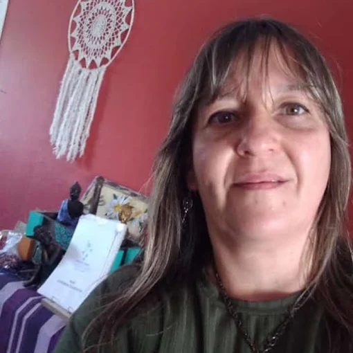
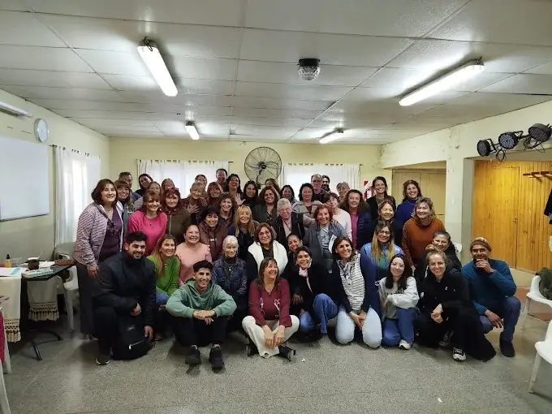

El síntoma como mensaje
Cada síntoma tiene un sentido biológico. No es un error del cuerpo sino una solución de supervivencia. Acompaño a leer ese mensaje para desactivar el programa y recuperar el bienestar.
Terapeuta, coach y formadora. Acompaño a personas y profesionales a reconectar con el sentido biológico del síntoma y a vivir con más conciencia y plenitud.

Mi camino comenzó con la búsqueda de respuestas que me llevaron a estudiar Psicología y trabajar como Asistente Terapéutica. En 2016 descubrí la Biodecodificación y, años más tarde, los Registros Akáshicos, dos prácticas que transformaron mi manera de entender el síntoma, las emociones y la vida misma.
Soy Andrea Carolina, curiosa insaciable, emprendedora y con una profunda vocación de servicio. Entiendo el síntoma no como un enemigo, sino como un mensaje que nos invita a mirar hacia adentro. Mi propósito es acompañarte en ese proceso de sanación, conciencia y evolución, porque una vida más plena y consciente es posible para todos.
Sigo formándome y profundizando en herramientas que integran cuerpo, emoción y sentido, para ofrecer un acompañamiento cada vez más completo y respetuoso con tu proceso.

Trayectoria formativa y certificaciones.
"Tu sistema es el mapa hacia tu tesoro interior."
Cada síntoma tiene un sentido biológico. No es un error del cuerpo sino una solución de supervivencia. Acompaño a leer ese mensaje para desactivar el programa y recuperar el bienestar.
Lo que no se resolvió en el clan puede repetirse. Trabajamos proyecto sentido y árbol para liberar cargas que no te pertenecen y abrir nuevas posibilidades.
De víctima del síntoma a protagonista de tu vida. Mi propósito es que recuperes tu poder y puedas vivir con más plenitud y libertad.
Una sesión individual es el primer paso para conectar con el sentido de lo que te pasa y abrir la puerta al cambio.